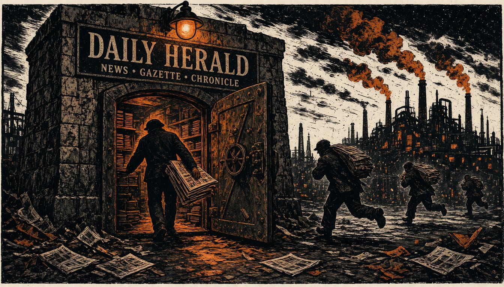

New York Times sues Brave over paywall bypass and AI content sales
The paper says Brave sold its journalism through its Search API and shipped a default paywall blocker. Other newspapers have filed their own suits in the same court.

The New York Times has sued Brave Software. The case was filed in the U.S. District Court for the Southern District of New York. In September, the Times alleged Brave sold unlicensed copyrighted material, including Times journalism, through its Search API. It also alleges Brave supplies scraped copyrighted content to AI companies such as Anthropic, Perplexity, Mistral, xAI and Cohere. The Times wants a jury to decide the case.
The Times says Brave acts as a burglar and an AI 'fence' selling stolen content to third parties. The Times said in September that the Brave Browser ships with a default paywall blocker that hands paywalled stories, including Times journalism, to users.
The paper says Brave hid the tool that took the content. In its September filings, the Times alleged Brave never disclosed the name of its crawling bot. That left website owners with no way to block it, the Times said. The paper also alleges Brave built products to get around paywalls and access controls.
The Times is not alone in court. In September, the press reported that Chicago Tribune Company, Daily News, LP and Orlando Sentinel Communications Company had filed their own copyright suit against Brave in the same New York court, also demanding a jury trial. Times spokesperson Graham James said Brave had flouted copyright law and ignored repeated requests to stop its conduct, while the paper backs the ethical use of AI. Perplexity's spokesperson answered the suit with the claim that the Times is overpaying its attorneys and underpaying its journalists.
Brave added a tool called Ask Brave, which often shows verbatim text and detailed summaries from copyrighted websites. Spokespeople for Brave, Anthropic and xAI had not answered requests for comment.